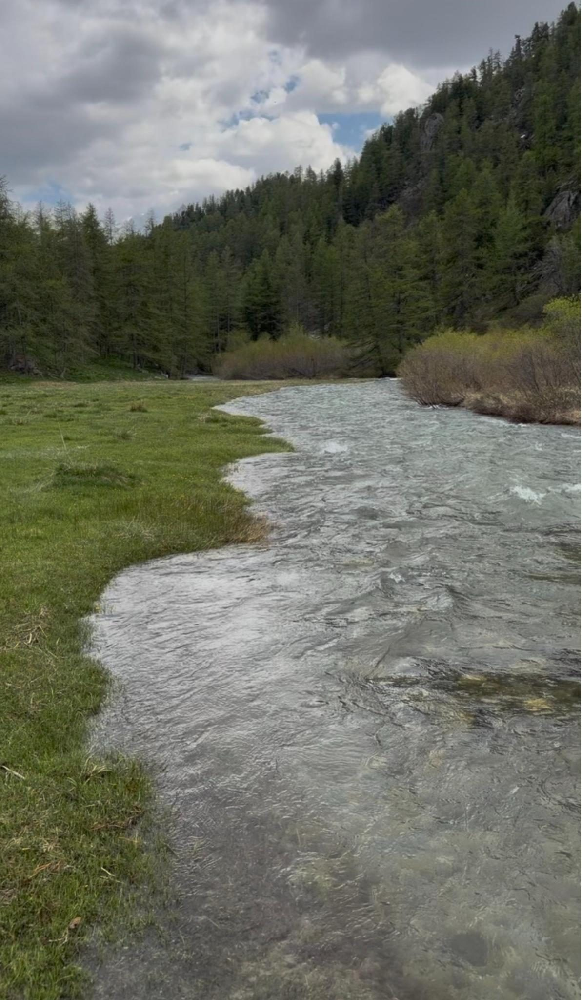

Alliance Synoïa
L’Alliance Synoïa, nourricière d’un monde émergent
L’Alliance Synoïa peut se définir comme l’incarnation d’une conscience nouvelle qui répond au vide existentiel de l’humanité laissé à l’aube du 21e siècle.
Elle souhaite combler le besoin profond d’une nouvelle organisation de vie, sur des bases spirituellement élevées, fortement exprimé dans nos consultations préalables au sein de la population qui appelle cette transition.
Synoïa n’est pas qu’un concept qu’il fallait nommer, c’est un manifeste, une école de la Conscience, ouverte à tous les contributeurs d’un nouveau modèle sociétal.
Ce qui ressort de nos constats est que l’homme ne veut plus être réduit au simple producteur-consommateur du modèle passé. Il aspire à reconnecter l’essence de toute chose et retrouver la nature de sa responsabilité au sein des interactions du Vivant, dans le respect de celui-ci et la recherche des équilibres. C’est à la fois un concept ancien et oublié et une philosophie du présent qu’il faut redéfinir et renommer en tant que récit collectif.
La synoïa harmogène
Nous l’appellerons la synoïa harmogène, à savoir, littéralement, une conscience connective génératrice d’harmonie (voir le concept de Synoïa).
Cette Synoïa (συνοΐα) – du grec σύν (syn) : « en union » et νοῦς (noûs) : « principe de conscience » – englobe tout un fond sociétal, incluant entre autres éléments fondateurs, une charte, une constitution et une gouvernance, que nous présenteront par la suite, qui sont la colonne vertébrale d’une nouvelle organisation de la société humaine.
Retenons pour le moment que la Synoïa est la conscience connective : l’unité vivante des esprits dans un champ commun d’intelligibilité, où chaque être demeure singulier tout en participant d’une même présence. La Synoïa est la source nourricière d’un nouveau récit collectif qui sera le fil rouge d’une feuille de route pour la conscience émergente. Ainsi, une société basée sur la collaboration et non plus sur la concurrence, s’enrichit de ses différences au lieu de s’appauvrir en les supprimant.
L’Alliance Synoïa est en quelque sorte une Université libre du Vivant. En évolution constante, elle sera génératrice de Synoïa harmogène. Elle naît pour féconder un vide qui l’appelle.
Elle a pour vocation de contribuer à la restructuration de la société et à l’acquisition des informations et compréhensions nécessaires à une expansion de conscience de l’humanité.

Concrètement
La triple vocation de l’Alliance Synoïa
-
1
Un lieu d’exploration nourrissant le changement de paradigme
L’Alliance Synoïa offre un espace de réflexion et de travail, de croisement des disciplines, d’exploration, d’expérimentation et de transmission, où le savoir ne se clame pas du haut d’une chaire mais émerge de l’expérience, de l’étude et de l’intelligence collective.
Elle n’impose ni dogme, ni idéologie, elle invite chacun à désapprendre, à questionner, à ressentir, à confronter et à expérimenter, avec pour objectif de proposer des modèles de réorganisation sociale.
Elle est un lieu où l’on vise à :
- se connaître autrement,
- penser au-delà des conditionnements et s’en détacher,
- collaborer en décloisonnant les disciplines,
- élaborer des modèles évolutifs d’organisation de la société,
- relier en ce sens l’intime, le collectif et le monde.
Ainsi l’Alliance Synoïa incarne un lieu de vie, d’accueil et de convergence des compétences à même de nourrir la réorganisation du monde selon le concept de Synoïa harmogène. C’est un lieu de rassemblement ponctuel des initiatives jusque-là éparpillées, que nous convieront à une même table le temps d’élaborer les travaux. C’est un rendez-vous permanent tout au long de l’année pour tous ceux à travers le monde, dont la sagesse et les contributions solides sont des pierres à l’édifice d’un nouveau paradigme.
Le lieu sera polyvalent, poursuivant les objectifs scientifiques, sociaux et écosophiques de l’Alliance. Il offrira un véritable cocon pour les contributeurs du projet, qui sera l’incubateur des outils et des politiques à mener dans la vision d’une société répondant à un autre niveau de conscience. Littéralement, les sages, les penseurs, les chercheurs, s’y retrouveront pour travailler dans l’intimité de séjours qui développeront et souderont cette intelligence collective de haut niveau.
Le choix du lieu devra donc permettre cette intimité, d’autant qu’il fonctionnera tout au long de l’année et proposera sur place des structures d’hébergement et de restauration, respectant ses principes.
C’est pourquoi le lieu doit être choisi pour ses atouts géographiques et énergétiques, dans un cadre environnemental naturel harmonieux, sans pollution d’aucune sorte et énergétiquement puissant et inspirant.
-
2
L’Alliance Synoïa a pour vocation d’essaimer
Partout dans le monde, se multiplient les besoins de lieux similaires, répondant à cette demande croissante d’une organisation de vie différente, plus consciente de l’autre, des vrais enjeux écologiques et plus particulièrement de l’impact de l’activité humaine sur la biodiversité.
C’est là un élan massif venant des profondeurs de l’être et de la société, encore accentué depuis les événements de 2020 et par le constat du délitement exponentiel de la société occidentale.
L’Alliance Synoïa répond très concrètement à l’orientation incontournable de cette époque charnière. C’est pourquoi elle aura vocation à terme d’aider la multiplication de ces lieux qui l’incarneront à travers le monde, partout où le besoin sera exprimé.
Les compétences réunies sur place et les multiples collaborations avec des institutions suisses et françaises dans un premier temps, proposeront également un éclairage tiers, un partenariat et un soutien pour les communes et autres collectifs qui souhaitent se diriger progressivement vers une organisation de vie synobiotique (relatif à la vie en résonance consciente), en harmonie avec la synosphère.
-
3
Un lieu de vie, de recherche et de développement pour et avec une science éclairée
L’Alliance Synoïa propose les éléments d’une expansion de la Conscience à travers l’intelligence individuelle et collective. L’un des outils majeurs de cette acquisition est la science éclairée non compartimentée, intégrant différentes disciplines, systématiquement confrontée à l’éthique de la Synoïa harmogène.
De nombreux scientifiques à travers le monde, en différentes disciplines, ont réalisé des avancées spectaculaires ces dernières années et émis la volonté de sortir du landernau et d’en informer le public, afin que chacun puisse s’approprier les implications de leurs travaux et de leurs découvertes et bénéficier par ce biais d’une nouvelle compréhension de l’organisation du Vivant.
Ces chercheurs appellent aussi à décloisonner et croiser leurs domaines d’exercice respectifs pour mieux progresser. Cela se fait parfois sur des événements ponctuels, mais il n’y a pas encore de pôle dévolu à cela tout au long de l’année, créant des retombées concrètes. Nous allons le créer.
Parallèlement de nouvelles générations de chercheurs, dont il conviendra d’évaluer les travaux par les protocoles adéquats, ont besoin d’obtenir les moyens matériels et financiers de développer leurs recherches.
Littéralement, l’époque explose de talents et d’avancées décisives qui ne demandent qu’à trouver leurs leviers de développement et leurs applications éthiques, pour le bien de tous. C’est aussi à cela que s’ouvrira la structure à venir.
Concrètement
- L’Alliance Synoïa a pour vocation de contribuer à établir la trame de la nouvelle société à naître pendant la transition en cours et assurer pour tous l’acquisition évolutive des savoirs.
Elle accueillera ponctuellement ou en résidence de plus longue durée des scientifiques, des penseurs, des chercheurs, sur différentes thématiques. Il s’agira d’identifier et d’organiser les avancées fondamentales qui vont avoir un impact considérable sur notre quotidien (énergie, transports, médecine, physique, économie, agriculture, biodiversité, protohistoire, etc.). Puis de préparer des feuilles de route et les promouvoir à travers leur implantation au sein des structures socio-politiques.
- Elle informera les publics du monde à travers un studio web-TV intégré au lieu. Il pourra répondre à des contrats privés et publics, mais aussi servira la région d’accueil en lui offrant une plateforme audiovisuelle locale.
- Elle organisera des événements, des conférences.
- Elle intégrera une unité de recherche, d’évaluation, de développement et d’éthique sur l’Intelligence Artificielle décentralisée et en Open Source (travail déjà en cours).
- Elle mettra en relation chercheurs, investisseurs et mécènes.
- Elle sera pourvue de structures de restauration et d’hébergement ponctuel pour les collaborations au projet.
- La structure juridique retenue est associative. Alliance Synoïa est donc une association, dont le siège est à Genève, en attente d’un agrément d’Utilité Publique. Une autre association, Alliance Synoïa France, a été créée en même temps en France pour gérer le premier lieu de l’Alliance dans les Alpes françaises.
- L’Alliance Synoïa a pour vocation de contribuer à établir la trame de la nouvelle société à naître pendant la transition en cours et assurer pour tous l’acquisition évolutive des savoirs.
En résumé
Un lieu d’exploration et de convergence
Un lieu qui aura à cœur de dynamiser la pensée créatrice, la recherche appliquée et la recherche fondamentale, de l’épauler au quotidien, d’informer et d’enseigner par une vulgarisation de qualité dans tous les domaines de pointe qui aujourd’hui émergent. Sujets qui révolutionnent déjà la compréhension du Vivant et de son environnement et par là-même le mode de vie et le niveau de conscience de chacun.
Ce sera le pôle qui favorisera ces croisements de réflexion, d’information, de transmission et d’organisation, tout en proposant des solutions pour favoriser au sein des structures humaines les nœuds de reliance entre les règnes, les êtres et les éléments de la Synosphère (pour rappel, voir le concept de Synoïa).
À emporter
Cette présentation existe aussi en version imprimable, mise en page pour la lecture sur papier.
Alliance Synoïa — Présentation du projet · alliance-synoia.org
Note de travail, à retirer avant la mise en ligne
Ce texte est le tien, mot pour mot, y compris les quelques conjugaisons que je n’ai pas corrigées et dont je t’envoie la liste.
De moi : deux intertitres, « La synoïa harmogène » et « Un lieu d’exploration et de convergence ». Ton texte courait d’un seul tenant sur près de 1 500 mots, ce qui est très long à l’écran. À valider ou à changer.